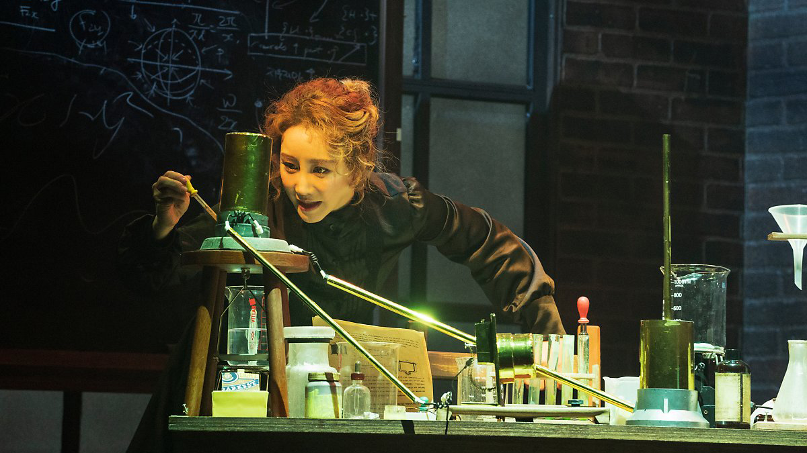

⋆ 1 ⋆
초록빛 발견
「 마리 퀴리 」
공연장
공연 기간
관람 시간
홍익대 대학로 아트센터 대극장
2020.07.30 ~2020.09.27
150분
2018년 국내에서 창작된 작품으로, 19세기 후반~20세기 초 실존한, 노벨상을 2회 수상한 과학자 마리 퀴리의 삶을 재구성한 ‘팩션’ 뮤지컬이다. 제목만 보고 ‘과학? 잘 모르는데 어렵지 않을까?’ 하고 거부감이 들 수 있지만, 극의 주제는 마리 퀴리의 과학적 업적보다는 그 과정과 인물에 포커스를 맞춘다. 여성과 민족을 인정해주지 않는 사회, 과학자로서의 직업적 책임, 그 벽이 주는 고독과 두려움을 안은 채 무너지지 않고 꿋꿋이 꿈을 좇는 마리의 모습을 무대 위에 표현한다. 또한 ‘안느’라는 가상의 인물을 통해 마리의 고뇌와 감정을 극대화하여 서사를 더욱 풍부하게 만들어낸 작품이다.
관람객으로부터 호평을 받으며 높은 평점을 유지했고, 이번 제5회 한국뮤지컬어워즈에서 대상을 포함하여 총 5개 부문에서 수상하여 웰메이드 작품임을 입증했다.
♬ 관람 포인트
· 극장 로비에 마리 퀴리의 생애와 업적에 관해 알 수 있는 공간을 마련해 놓는다. 공연을 보기 전에 시간적 여유를 갖고 도착해서 읽고 관람을 하면 내용 이해와 몰입에 도움이 된다.
· 배우들이 실제로 방정식을 암기해서 공연 중에 직접 칠판에 작성을 하며 연기를 해낸다. 이러한 디테일과 고증들을 찾아가면서 보면 더욱 재밌게 볼 수 있다.
· 극장 좌석의 단차가 일명 '아기가 굴러도 안전한 단차'로 유명하다. 1열 뒤쪽 자리에 앉게 될 경우, 운이 안 좋으면 시야의 절반이 앞사람의 뒤통수가 될 수도 있다.
♬ 대표 넘버
너는 누구, 너는 무엇, 너의 또 다른 이름은 나
“ 또 다른 이름 ”
넌 항상 나였어 너의 눈부신 꿈들이 날 빛나게 해
“ 그댄 내게 별 ”
∧ Close